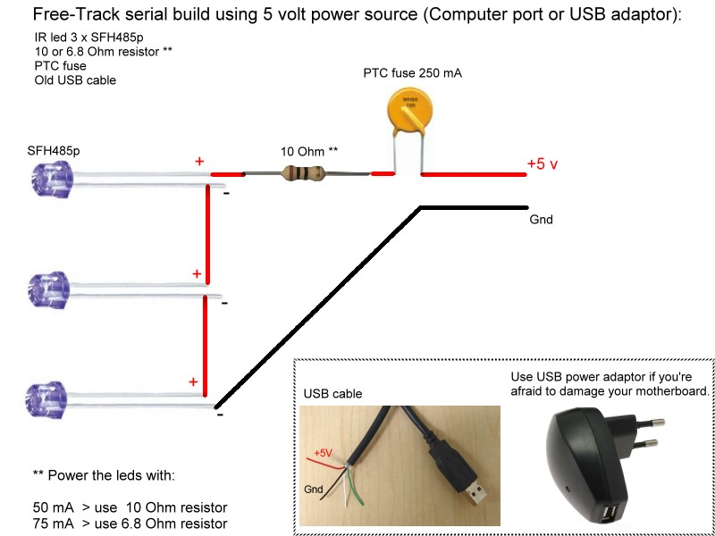

Le Track IR est un système captant continuellement
les mouvements et l'orientation de votre tête. J'utilise ce système pour que l'immersion
soit totale à l'intèrieure de la cabine
Il existe plusieurs sorte de Track IR,dont le plus connu le TRACKIR 5 AU PRIX DE 189,00 €Pour ma part j'ai confectionné un système identique à l'aide d'une cam de PS3 et
comme recepteur 3 leds infrarouge branchées sur un prot USB pour l'alimentation
Vous trouverez ci-dessous toutes les infos à la fabrication de celui ci 